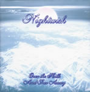
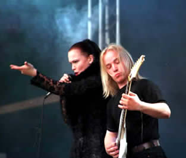

Entrevista
da banda à Gisele Santos - MundoRock.net
Vamos falar do novo álbum Over the Hills and Far Away lançado em julho de 2001. Como foi a produção e o processo de gravação? Usamos a mesma fórmula de antes: o Caverock Studio em Kitee e Finnvox em Helsinki, com os mesmos engenheiros: Tero Kinnunem e Mikko Karmila. O processo de gravação foi bem calmo e não tivemos a pressão, que é familiar, nas gravações de um disco inteiro. Então, foi bem relaxante.
Quem fez a capa e o que significa? A versão final tem uma diferente capa da versão européia... Não sei de qual das duas você está perguntando. A capa branca é uma fotografia dos Andes, tirada do avião durante nossa turnê pela América do Sul. A outra capa foi manipulada pelo nosso gig em São Paulo e alguns gráficos. Eu gosto das duas.
Quais as influências incluídas neste novo trabalho? Nós queríamos fazer algo entre um álbum normal e algumas músicas ao vivo. Este álbum tem muitas memórias nostálgicas, porque Tuomas era um fã de Gary Moore nos anos oitenta. Essa música foi um grande sucesso e ele era totalmente ligado nela. Anos depois ele achou essa música de novo e pensou que ficaria um cover interessante. É uma daquelas músicas angelicais que nunca fica velha. As outras duas músicas, Tuomas fez especialmente para esse disco. 10th Man Down é mais uma tradicional balada do Nightwish. Nós todos gostaríamos de sair disso tudo, agora e sempre...
Over the Hills and Far Away já ganhou disco de platina na Finlândia, por terem atingindo a marca de 10.000 cópias vendidas. Vocês esperavam tanta rapidez na vendagem assim? Como foi tudo? Bom, aqui na Finlândia tem uma verdadeira base de fãs, então já tínhamos alguma expectativa, mas chegar a platina tão rápido, foi uma surpresa! Mesmo agora, há 26 semanas nas paradas, ainda estamos com a posição número 4 na parada oficial da Finlândia.
Por que fizeram a regravação de Astral Romance, da banda Angels Fall First? Todos nós amamos essa música, mas foi uma produção meio pobre no primeiro álbum, então queríamos refazer com um som e vocal masculino melhor. É também a primeira música escrita para o Nightwish, então tem um toque de nostalgia nela.
Somente a versão alemã de Over the Hills and Far Away inclui seis faixas ao vivo além das seis canções inéditas? Não posso continuar com isso... Acho que as músicas ao vivo estão incluídas em quase todas as versões, menos da Finlândia. As gravadoras fazem muitas coisas sem informar os artistas (risos)!
Irão lançar video-clipe de alguma música? Tem um video do Over the Hills and Far Away. Foi filmado há alguns meses atrás, e é de longe nosso melhor vídeo. Não vai ser lançado separadamente, mas provavelmente será uma faixa bônus em algum futuro CD nosso.
Qual a música preferida da banda? Não só deste trabalho, mas pode ser de outros também. Todo mundo tem sua música preferida. Para Tuomas e para Tarja, definitivamente é Dead Boy's Poem. Todos nós amamos Gethsemane, Kinslayer, Sleeping Sun...
Como têm sido os shows? A maioria fantástico! Naturalmente nós temos nossos dias ruins, a maioria por causa de alguma indisposição. É sempre um prazer tocar em algum lugar exótico, como a América do Sul, Rússia ou Coréia do Sul. Quanto mais selvagem o público, melhor é. (O Brasil mostrou ser o melhor, até agora...)
Como vocês reproduzem os coros ao vivo? Fazem playback ou coisa do tipo? Sim, temos algumas fitas de fundo, que inclui o coro, algumas vozes masculinas e uns efeitos. Isso é necessário para shows ao vivo, pois temos um grande som no cd. Naturalmente tocamos todos os nossos instrumentos ao vivo. Não é possível trazer um coral ou uma orquestra para os shows, pelo menos ainda não, mas é uma boa idéia!
É verdade os boatos sobre o rompimento da banda com a gravadora Spinefarm Records? Os rumores são um saco! Nós temos uma boa relação com a Spinefarm, e também faremos nosso próximo álbum com eles.
Em 2001 a banda lançou seu 1º DVD, um show gravado ao vivo na Finlândia, chamado From Wishes To Eternity. Falem um pouco sobre este DVD e como tem sido a aceitação. Estávamos com muito medo pra fazer isso. Mesmo assim, a idéia de ser a primeira banda na Finlândia a fazer algo do tipo, fez com que dessemos o melhor de nós. O show em si foi muito bom, mas foi um grande trabalho para colocar tudo junto. Estamos muito satisfeitos com o resultado e parece que o público também. Teve até uma pré-estréia num grande cinema para esse lançamento!
O que vocês acham de toda a fama e principalmente de serem um dos mais importantes grupos do cenário metálico mundial? Uau! Não vamos tão longe assim! (risos) Naturalmente estamos felizes por tudo isso, e estamos tentando dar o melhor que podemos para o futuro. Estamos orgulhosos pelo o que conseguimos e tudo isso sem compromissos, sendo quem a gente é, falando através da nossa música. Não teve nenhuma imagem construída ou empresários na nossa história, então é ótimo ver que as pessoas apreciam a honestidade e a originalidade de nosso trabalho.
Existe algum feed back direto com os fãs para saberem o que estão achando do novo trabalho? Existe no site da banda. O cd Over the Hills and Far Away foi muito apreciado, mas podemos perceber facilmente que todo mundo já está esperando por um álbum normal.
Por que Sami Vänskä saiu da banda? Foi uma decisão de todos os integrantes da banda, inclusive Sami. Por muitos motivos, alguns problemas pessoais e uma necessidade de renovar o círculo da banda.
Vocês já tocaram aqui no Brasil. O que acharam do público? Você sabe como a gente se sentiu! Eu nunca tinha visto tanta paixão em um show. Vocês são muito legais e respeitadores, então já estamos contando as noites para nosso próximo show aí!
Os fãs brasileiros adoram vocês e vivem perguntando, quando o Nightwish voltará ao Brasil? Isso provavelmente vai acontecer em julho ou agosto de 2002, depois do lançamento do nosso próximo álbum!
Deixem um recado para os fãs e leitores do site MundoRock.net. Segredos da noite e gritos! Veremos vocês em breve!
Extraída de www.mundorock.net
|